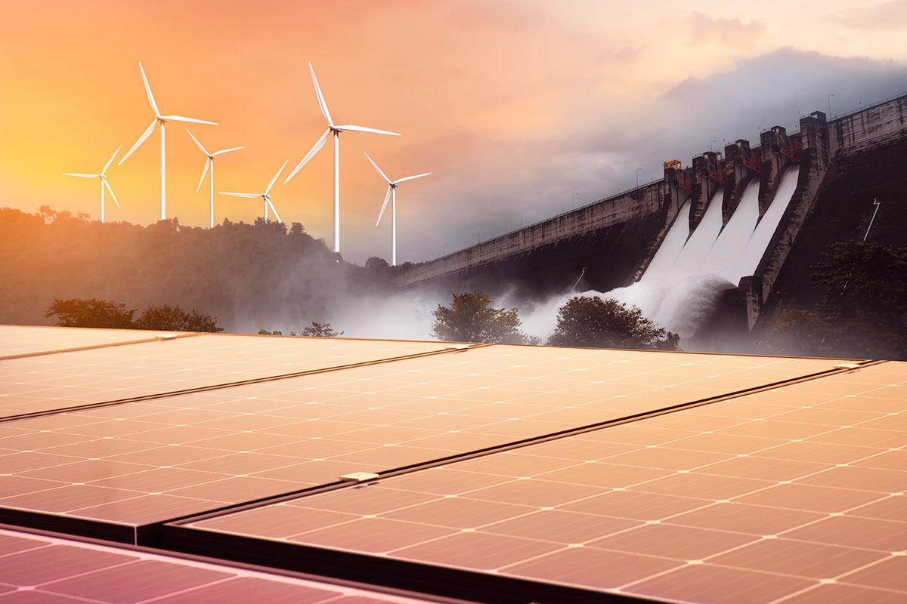
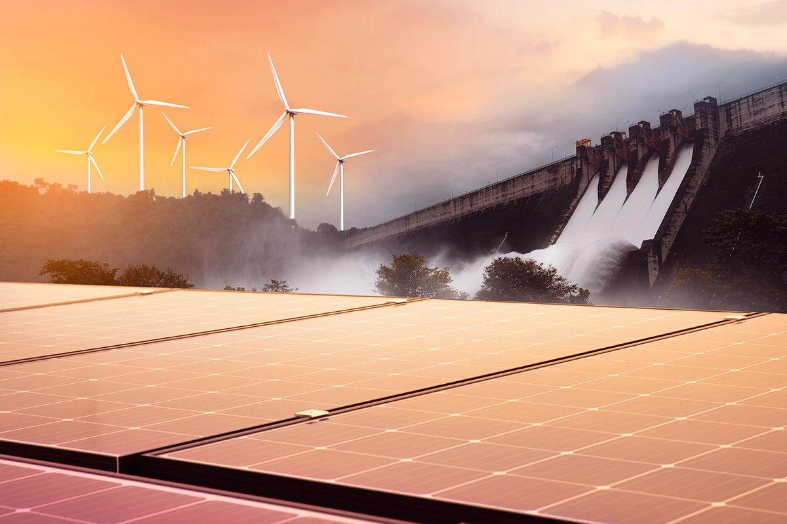

As fontes renováveis de energia são aquelas formas de produção de energia em que suas fontes são capazes de manter-se disponíveis durante um longo prazo, contando com recursos que se regeneram ou que se mantêm ativos permanentemente. Em outras palavras, fontes de energia renováveis são aquelas que contam com recursos não esgotáveis. Existem vários tipos de fontes renováveis de energia, das quais podemos citar a solar, a eólica, a hídrica, a biomassa, a geotérmica, a das ondas e a das marés.